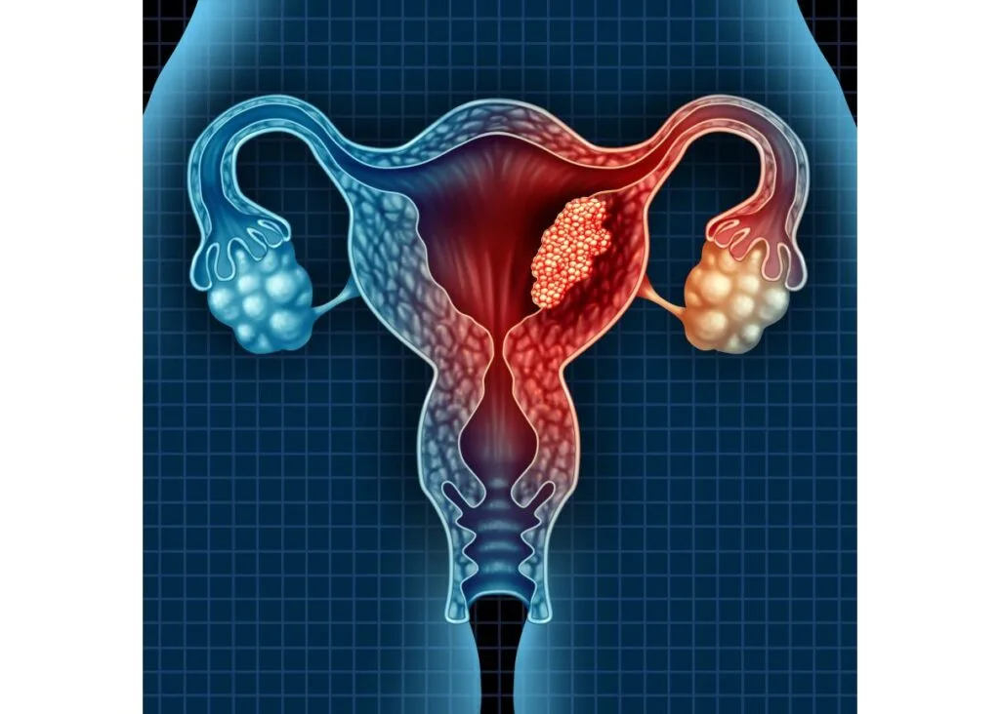
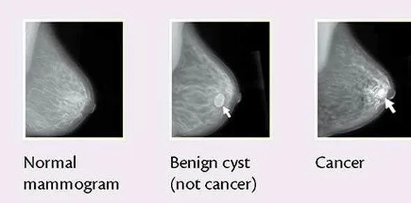
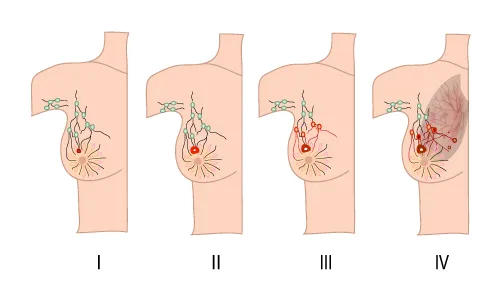
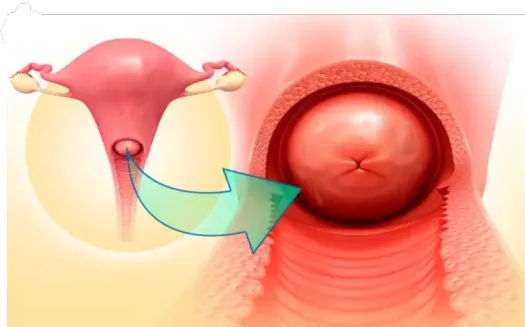
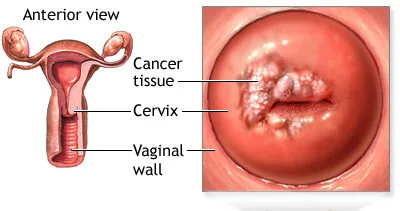
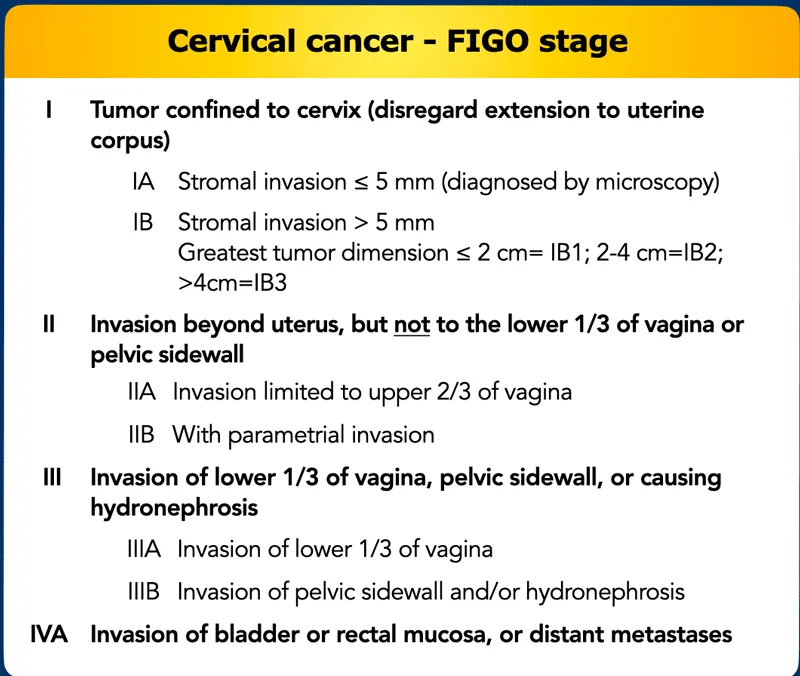
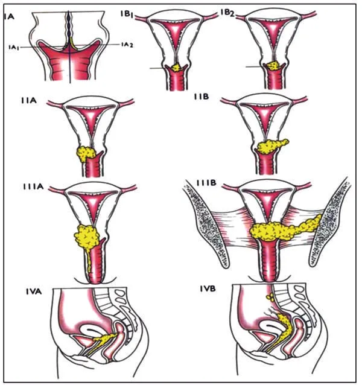
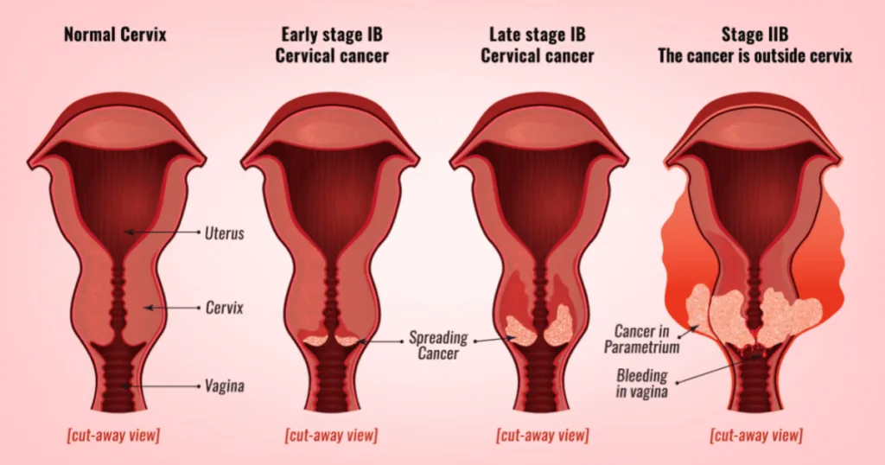

Expanded Nursing Uganda Explanation
Cancers of Reproductive Health Organs(Breast, Cervix, Uterus, and Ovaries) should be understood beyond a short definition. Link the concept to patient history, focused assessment, common risks, nursing priorities, documentation and evaluation of outcomes.
Contents, 29 sections (tap to expand)
01 Breast Cancer
Breast cancer occurs when cells in the breast grow and divide uncontrollably, forming a mass of tissue known as a tumour .
Breast cancer can invade nearby tissues and travel to other body parts, forming new tumours, a process called metastasis.
02 Clinical Manifestations
Early Signs of Breast Cancer
- Asymptomatic : Sometimes, breast cancer shows no symptoms at all, especially in the early stages. This means you might not notice anything unusual.
- Size and Shape Changes : A noticeable change in the size or shape of the breast.
- Lump : A mass or lump that may be as small as a pea.
- Persistent Lump or Thickening : A lump or thickening in or near the breast or underarm that persists through the menstrual cycle.
- Skin Changes : Dimpling, wrinkling, scaliness, or inflammation of the skin on the breast or nipple.
- Redness : Redness of the skin on the breast or nipple.
- Distinct Area : An area distinctly different from other areas on either breast.
- Nipple Discharge : Blood-stained or clear fluid discharge from the nipple.
Others ;
- Unilateral nipple discharge : When fluid, which could be clear, bloody, or another color, leaks from only one nipple.
- Change in breast size : One breast might become noticeably larger or smaller than the other, or there could be a change in the overall size of the breast.
- Nipple or skin retraction : The nipple may become inverted or pulled inward, or there may be dimpling or puckering of the skin on the breast.
- Local lymphadenopathy : Swollen or enlarged lymph nodes in the armpit or collarbone area, indicating possible spread of cancer.
- Skin changes-orange-like appearance ( Peau d’orange ): The skin on the breast might take on an orange peel-like appearance, due to changes caused by cancer cells blocking lymph vessels.
- Nipple or skin ulceration : Sores or ulcers on the breast or nipple that do not heal or go away.
- Breast pain : Persistent or unusual pain in the breast, although breast cancer does not cause pain in its early stages.
- Symptoms of metastasis : If the cancer has spread to other parts of the body, symptoms may include bone pain, shortness of breath, jaundice, or neurological symptoms like headaches or seizures.
03 Risk Factors
- Age : Being 55 or older increases the risk of breast cancer.
- Sex : Women are much more likely to develop breast cancer than men.
- Family History and Genetics : A family history of breast cancer increases the risk especially if close relatives like mother, sister, or daughter have had it. About 5% to 10% of breast cancers are due to inherited abnormal genes like the BRCA1 and BRCA2 genes.
- Smoking : Tobacco use is linked to many cancers, including breast cancer.
- Alcohol Use : Drinking alcohol increases the risk of certain types of breast cancer.
- Obesity : Obesity increases the risk of breast cancer and recurrence.
- Radiation Exposure : Prior radiation therapy, especially to the head, neck, or chest, increases risk.
- Early onset menarche: Starting menstruation at a young age, usually before age 12.
- Late menopause : Continuing menstruation later in life, usually after age 55.
- Delayed first pregnancy ( after 30 years of age ): Not becoming pregnant for the first time until after the age of 30.
- Null parity: Never having given birth to a child.
- Family history (maternal or paternal) BRCA1 and BRCA2 genes: A family history of breast cancer,
- History of breast biopsy : Previous biopsies or other breast procedures may indicate increased risk.
- Use of Hormonal therapy for more than 4 years : Long-term use of hormone replacement therapy (HRT), which involves taking oestrogen and progesterone to relieve symptoms of menopause.
04 Stages of Breast Cancer
Staging helps describe the extent of cancer by determining the size, location, and spread of the tumour.
- Stage 0 : Non-invasive; cancer has not broken out of the breast ducts.
- Stage I : Cancer cells have spread to nearby breast tissue.
- Stage II : Tumour is smaller than 2 cm and has spread to underarm lymph nodes or is larger than 5 cm without spreading to underarm lymph nodes.
- Stage III: Cancer has spread beyond the breast to nearby tissues and lymph nodes but not to distant organs (locally advanced breast cancer).
- Stage IV : Cancer has spread to distant organs such as bones, liver, lungs, or brain (metastatic breast cancer).
05 Diagnosis/Investigations:
- History Taking : About family history of breast cancer,medical history, and any other symptoms.
- Self Breast Examination and Breast Examination : For any lumps, changes in size or shape, or other abnormalities.
- Mammogram: Special X-ray of the breasts that can detect changes or abnormal growths, even before they can be felt. It’s a common screening tool for breast cancer.
- Ultrasonography : Also known as ultrasound, Uses sound waves to create images of breast tissues. It helps in diagnosing lumps or other abnormalities found during a physical examination or mammogram.
- Positron Emission Tomography (PET) Scan : This test uses special dyes to highlight areas of the body with abnormal metabolic activity, which can indicate the presence of cancer cells.
- Magnetic Resonance Imaging (MRI) : MRI uses magnets and radio waves to produce detailed images of breast structures. It’s especially useful for evaluating the extent of the disease in the breast.
- TNM System : This is a staging system used to describe the extent of the cancer based on the size of the tumour (T), whether it has spread to nearby lymph nodes (N), and whether it has metastasized to other parts of the body (M).
- Full Blood Count : This blood test helps assess the overall health and can indicate if there are any abnormalities or signs of infection or inflammation.
- Renal and Hepatic Profile: Blood tests to assess the function of the kidneys and liver, as metastatic breast cancer can spread to these organs.
- Chest X-Ray : This test may be done to check for any signs of metastasis to the lungs.
- Biopsy (Preferably Fine Needle Aspiration) : A biopsy is the definitive way to diagnose breast cancer by analyzing a sample of breast tissue under a microscope. Fine needle aspiration is a less invasive biopsy method often used for initial diagnosis.
06 Management of breast Cancer
Management depends on the tumour’s location and size, lab test results, and whether the cancer has spread.
Stage 0 (Cancer in situ):
- Young Women : Conservative surgery only, such as lumpectomy.
- Advanced Age : Mastectomy only.
Early Stage (Stage I and II):
- Surgery : Modified radical mastectomy and lymphadenectomy for advanced age, and simple mastectomy or wide local lumpectomy for young age.
- Hormonal Therapy : Tamoxifen 20 mg orally daily for 5 years, but may cause retinal damage. Blocks hormones that fuel certain cancers.
- Chemotherapy:
- Cyclophosphamide : 30 mg/kg IV single dose.
- Fluorouracil : 300-1000 mg/m2 IV, given every 4 weeks based on patient response.
- Paclitaxel : 6mg/ml in combination with Cisplatin 1mg/ml.
Late Cancer (Stage III and IV):
- Hormonal Therapy : Same as for early stage, Tamoxifen 20mg orally daily for 5 years, but may cause retinal damage.
- Chemotherapy : same as for early stage.
- Radiation Therapy : Uses high-energy rays to kill cancer cells.
- Immunotherapy : Helps the immune system fight cancer.
- Targeted Drug Therapy: Uses drugs to target specific cancer cells.
- Lumpectomy (Partial Mastectomy) : Removal of the tumour and some surrounding tissue, often followed by radiation therapy.
- Mastectomy : Removal of the entire breast.
- Axillary Lymph Node Dissection : Removal of multiple lymph nodes.
- Modified Radical Mastectomy : Removal of the entire breast, underarm lymph nodes, and chest wall muscles if the cancer has spread. Reconstruction may be an option.
07 Mastectomy
Mastectomy is a planned surgical procedure involving the removal of the breast tissue .
There are different types of mastectomy:
- Partial Mastectomy: Removal of lumps with surrounding normal tissue.
- Simple Mastectomy : Removal of breast tissue with node biopsy.
- Extended Simple Mastectomy: Removal of breast tissue, axillary tail, and nodes.
- Total Mastectomy: Complete removal of the breast leaving the pectoralis muscle intact.
- Radical Mastectomy: Removal of breast, skin, muscle, and nodes.
- Modified Radical Mastectomy : Removal of breast, skin, muscles, and nodes with subsequent skin grafting.
Pre-operative Care
- Admission : Patient admitted to a surgical ward.
- History Taking : Record medical, surgical, and gynaecological history.
- Observations : Vital signs monitoring, general examination. And the doctor is informed.
- Investigations : Various tests including urinalysis, blood tests, and imaging.
- Patient Education : Inform the patient about the surgery, its purpose, complications, and anaesthesia side effects.
- Informed Consent: Obtain consent from the patient.
- Preparation : IV line, blood booking, catheterization, pre-medications administration, and changing into hospital gown
- Feeding : No feeds or drinks on the day of the operation
- Rest and sleep : Ensure enough rest and sleep i.e. minizing noise, reducing bright light.
Morning at the day of the operations
- IV line is put up
- Booking for blood in the laboratory
- Catheterisation of the patient
- Administration of pre-medications
- Helping the patient to change into hospital gown
- Removal of all ornaments from the patient and keep them properly.
- Continuous counselling to relieve anxiety
- Preparation of patients medical document
- Taking the patient to the theatre and handing her over to the theatre.
Post-operative Management
When the operation is finished, the information from the theatre will be sent to the ward and 2 nurses will go and collect the patient, reports are received from the surgeon, recovery room nurses and anaesthetists and then the patient is wheeled to the ward.
- Patient Reception : Patient is received in a warm bed, flat position and turned to one side. As soon as she gains consciousness sit her in the bed leaning on the affected side to aid drainage.
- Arm Care : Elevation and positioning as per surgeon’s orders.
- Observation : Regular monitoring of temperature, pulse, respiration, blood pressure, bleeding, and edema.
- Medical Treatment: Pain relief, antibiotics, vitamins, and supportives.
- Pethidine 100mg 8 hourly for 3 doses on change to panadol to complete 5 days
- Antibiotics: ampicillin or gentamicin as ordered
- Supportives: vitamins like vitamin c, Iron, folic acid, diazepam
- Wound Care : Inspection, dressing, drainage management, and stitch removal. Stitches are removed on the 8th – 10th day.
- Wound and Drainage Care
- Aseptic Care: Avoid unnecessary touching; inspect for tension or edema.
- First Dressing: Done 48-72 hours post-surgery.
- Drain Management: Monitor and remove drainage when discharge ceases.
Nursing Care After Mastectomy
- Initial Care: Patient received in a warm bed in a flat position with head turned to one side.
- Positioning : Once conscious, position the patient upright to aid drainage.
- Vital Observations : Check vitals every 15 minutes in the first hour, then every 30 minutes for the next hour until stable.
- Site Observation : Monitor for bleeding and edema.
- IV and Blood Transfusion: Ensure correct flow rates.
- Welcome and Explanation : Explain the procedure and provide comfort.
- Analgesics and Antibiotics : Administer as prescribed (e.g., Pethidine, Ampicillin).
- Supportive Care : Provide vitamins and minerals.
- Hygiene : Provide bed baths and oral care until self-sufficient.
- Diet : Encourage fluids and nutritious food.
- Elimination : Promote regular bowel and bladder emptying.
- Exercise : Begin chest, arm, and leg exercises to prevent deformity and contractures.
- Psychotherapy : Reassure and counsel on using artificial breasts.
Advise on discharge
- Radiotherapy: Start when the wound heals (6-8 weeks), lasting 2 months.
- Follow-Up: Every 2 months for up to 2 years.
- Chemotherapy: Continue as prescribed.
- Regular Checkups: Monitor for metastasis.
- Cancer Institute Visits: Attend radiotherapy.
- Artificial Breast Use: Educate on proper use.
- Necrosis : Death of suture line tissue.
- Nerve Damage : Potential paralysis of the arm.
- Contractures : Tightening of muscles and joints.
- Sloughing : Shedding of dead tissue.
- Infections : Risk of infection at the wound site.
- Gaping : Opening of the wound.
- Chronic Sinus: Persistent drainage site.
- Oedema : Swelling of the arm.
- Thrombosis : Blood clots in the axillary vein.
- Cosmetic Deformity : Changes in appearance post-surgery
08 The Cervix
The cervix is a vital part of the female reproductive system, connecting the uterus to the vagina. It has two main types of cells:
- Squamous cells : Flat, thin cells found in the outer layer of the cervix ( ectocervix ).
- Glandular cells : Column-shaped cells that produce cervical mucus and are found in the cervical canal ( endocervix ).
09 Cervical Cancer
Cervical cancer is a malignant tumor found in the tissues of the cervix, occurring when abnormal cells in the cervix turn into cancer cells. These cancer cells can invade the surface cells (epithelium) and the underlying tissue (stroma) of the cervix, most commonly beginning in the transformation zone.
Epidemiology
- Around 3,100 women are diagnosed with cervical cancer each year in the UK.
- In Australia, about 780 women are diagnosed annually.
- In Uganda, 2,464 women die from cervical cancer annually, with over 3,577 new cases diagnosed each year, making it a leading cause of death among women in the country.
Types of Cervical Cancer
- Squamous cell carcinoma: Begins in the flat, thin cells lining the bottom of the cervix; accounts for 80-90% of cervical cancers.
- Adenocarcinoma : Develops in the glandular cells lining the upper portion of the cervix; accounts for 10-20% of cervical cancers.
- Mixed carcinomas: Involve both types of cells.
Causes of Cervical Cancer
The exact cause is unknown, but several risk factors have been identified:
- Human papillomavirus (HPV) : A major cause, with types 16 and 18 being the most oncogenic.
- Smoking : Chemicals in cigarette smoke can damage cervical cells.
- Immunosuppression : Conditions like HIV/AIDS weaken the immune system.
- Oral contraceptives : Long-term use increases risk, which decreases after stopping the pill.
- Other STIs : Infections like herpes and chlamydia can increase risk.
- Circumcision : Women with uncircumcised partners are at higher risk.
- Early sexual intercourse : Exposure to sperm can promote cell division in the transformation zone.
- High parity : Multiple pregnancies can cause cervical trauma.
- Repeated induced abortions : Can cause cervical trauma.
- Exposure to chemicals : Occupational exposure to substances like tetrachloroethylene.
Symptoms of Cervical Cancer
Early symptoms may not be noticeable but can include:
- Vaginal bleeding (between periods, after intercourse, post-menopausal)
- Unusual vaginal discharge (watery, pink, foul-smelling)
- Pelvic pain (during intercourse or otherwise)
Advanced stages can present with:
- Severe weight loss, anemia, dehydration
- Fatigue
- Back pain
- Pain or swelling in the legs
- Urinary or fecal incontinence
- Bone fractures
- Hematuria
- Enlarged organs
- Rectal bleeding
- Tenesmus (desire to defecate)
- Fistulas
10 Staging of Cervical Cancer
Staging describes the extent of cancer spread. Federation for International Gynecology and Obstetrics (Figo) staging.
Stage 0 : Carcinoma in situ (pre-invasive)
Stage I : Confined to the cervix
- 1a : Microscopic invasion
- 1b : Clinically visible lesion confined to the cervix
Stage II : Beyond the uterus but not to pelvic wall or lower third of vagina.
- IIa : Limited to 2/3 of the vagina
- IIb : Parametrial invasion(Cancer cells found outside the smooth muscles of the cervix.
Stage III : To pelvic wall, involves lower third of vagina, or causes hydronephrosis
- IIIa : Invasion of lower 1/3 of the vagina.
- IIIb : Invasion of pelvic sidewall +/- hydronephrosis
Stage IV : Invades bladder/rectum mucosa or distant metastasis.
Can spread by:
- Direct spread to parametria on both sides, upper part of cervix, uterus, vaginal wall, bladder.
- Lymphatic spread to lymph nodes in parametria, obturator nodes, external and internal iliac nodes, inguinal nodes, sacral nodes, hypogastric glands and rarely aortic and lumbar glands.
- Blood spread to the lungs, liver, bone and intestines implantation.
11 Diagnosis of Cervical Cancer
1. History and Examination: Includes speculum and colposcopic examination.
2. Colposcopy-directed biopsy: Examination and tissue sample collection. Cervix-lesion may be in the form of an ulcer, Cauliflower growth.
3. Pap smear(papanicolau) : Detects early-stage cancer or precancerous changes. The doctor scrapes a sample of cells from the cervix. For a Pap test, the lab checks the sample for cervical cancer cells or abnormal cells that could become cancer later if not treated.
4. Acetic Acid Test : This is of two types;
- Unaided Visual Inspection (UVI): 3% acetic acid is painted on to the cervix. The abnormal area stains white and is biopsied to find out what type of lesion it is.
- Aided Visual Inspection(AVI) : cervix is painted with 3% acetic acid using a magnifying instrument to find the lesions present.
5. HPV testing : Identifies high-risk HPV strains.
6. Other tests : Full blood count, urea and electrolyte levels, liver function tests.
7. Biopsy : This is a surgical removal of tissue to look for cancer cells and usually done under local anesthesia. This may be done if cervical smear reveals evidence of cervical intraepithelial neoplasia. The tissue sample obtained is sent to the pathologist for histology and for confirmation.
12 Treatment and Prevention of Cervical Cancer
- Pre-invasive : Pre invasive- lesions are destroyed using methods like liquid carbon dioxide, laser beam(leep)loop, electric excision procedure where the doctor uses an electric wire loop to slice off a thin, round piece of cervical tissue. Lesions destroyed using cryotherapy, laser beam, or LEEP.
- Invasive carcinoma: Treatment is by wertheim’s hysterectomy. This involves total hysterectomy with removal of the upper 1/3 of the vagina as well as dissection of the lymph nodes including Para-aortic nodes plus salpingo-oophorectomy and this can be followed by radiotherapy. Treated with surgery (e.g., hysterectomy), chemotherapy, and radiotherapy.
- Radiation therapy : This is the use of high-energy rays to kill cancer cells.
- It’s an option for women with any stage of cervical cancer and may prefer radiation therapy to surgery.
- It may also be used after surgery to destroy any cancer cells that remain in the area.
- For women with cancer that extends beyond the cervix may need to combine radiation therapy and chemotherapy.
Surgical Management
Surgery is an option for women with Stage I or II cervical cancer. If you have a small tumor, the type of surgery may depend on whether you want to get pregnant and have children later on. Some women with very early cervical cancer may decide with their surgeon to have only the cervix, part of the vagina, and the lymph nodes in the pelvis removed (radical trachelectomy).
Prevention
- Primary Prevention: Includes vaccination, health education, promoting safe sexual practices, reducing drug abuse, and regular screening.
- Secondary Prevention : Early detection through regular screening and prompt treatment of precancerous lesions.
Primary Prevention
Since cervical cancer is often caused by a sexually transmitted infection (STI), steps can be taken to prevent its incidence. Primary prevention involves reducing or eliminating risk factors.
Vaccination : Encourage HPV vaccination to prevent cervical cancer.
Community Health Education
- Promote awareness about the importance of early marriages and safe sexual practices.
- Conduct educational programs to reduce drug abuse and promote the use of condoms.
- Advocate for reducing the number of sexual partners.
- Encourage behavior change and improved hygiene.
Men Involvement : Involve men in educational programs to promote understanding and support for prevention measures.
Income Generating Activities: Support income-generating activities to improve community well-being and reduce risk factors associated with poverty.
Secondary Prevention
Secondary prevention involves methods to detect cancer in its earliest stages so that treatment can begin as soon as possible.
Screening
- Promote regular Pap smear tests to detect early cervical changes.
- Ensure early referral to higher levels of care for further evaluation and treatment if needed.
Awareness and Training
- Create awareness among health workers about the importance of early detection.
- Train healthcare providers to perform screenings effectively.
Cost and Accessibility
- Reduce the cost of screening to make it more accessible to the population.
- Provide additional radiotherapy units in the country to extend services closer to the people.
13 Endometrial Cancer/Uterine Cancer
Endometrial cancer is a malignant tumor within the endometrium, resulting in abnormal cell growth that can invade or spread to other parts of the body.
14 Incidence/Epidemiology
- It is the sixth most common cancer in women globally.
- More common in developed countries, with a lifetime risk of 1.6% compared to 0.6% in developing countries.
- Occurs in 12.9 out of 100,000 women annually in developed countries.
- Most frequently appears during peri-menopause (ages 50-65).
- 75% of cases occur after menopause.
- Women younger than 40 make up 5% of cases; 10-15% occur in women under 50.
15 Causes/Risk Factors
The exact cause is idiopathic, but it is associated with:
- High blood pressure
- Diabetes
- Excessive or long-term estrogen exposure
- Polycystic ovary syndrome (PCOS)
- Functioning ovarian tumors
- Anovulation
- Infertility
- Family history or genetic factors
- Obesity
- Late menopause
- Early menarche
- Age above 55 years
- Excessive use of tamoxifen
- Nulliparity (never having had children)
16 Classifications of Endometrial Cancer
- Type 1 Endometrial Carcinoma : Estrogen-related, occurs in younger, obese, premenopausal women, usually low-grade and endometrioid.
- Type 2 Endometrial Carcinoma: High-grade, usually serous or clear cell, affects older women.
- Type 3 Endometrial Carcinoma : Hereditary or genetic types, some related to Lynch II syndrome.
17 Clinical Presentation
- Vaginal bleeding or spotting in postmenopausal women (90% of cases).
- Abnormal menstrual cycles or heavy, frequent bleeding in premenopausal women.
- Thin white or clear vaginal discharge in postmenopausal women.
- Enlarged uterus on physical examination.
- Lower abdominal pain, pelvic cramping, painful sexual intercourse, painful or difficult urination (with metastasis).
18 Diagnosis
- History and physical examination.
- Dilation and curettage.
- Transvaginal ultrasound to examine endometrial thickness in postmenopausal bleeding.
- Endometrial biopsy.
- CT scan.
19 Differential Diagnosis
- Senile endometritis/vaginitis.
- Dysfunctional uterine bleeding.
- Submucous myoma/endometrial polyps.
- Cervical cancer.
- Uterine sarcoma.
- Primary carcinoma of the fallopian tube.
20 Management
Surgery
- Stage I: Total Abdominal Hysterectomy and Bilateral Salpingo-Oophorectomy (TAH-BSO).
- Stage II: Radical Hysterectomy.
- Stage III : Radical surgery with maximal debulking followed by radiotherapy.
- Stage IV: Radical radiotherapy, with or without hormonal therapy and/or chemotherapy.
Radiotherapy
- Most patients with early-stage disease receive a combination of surgery and radiotherapy based on histopathological findings.
- Surgery alone is limited to patients with endometrioid type carcinoma confined to less than 50% of the myometrial thickness.
Hormonal Therapy
- Progestogens are the most commonly used form of hormonal therapy in endometrial cancer.
Chemotherapy
Chemotherapy is uncommon but should be considered in fit patients with systemic disease. Commonly used medications include:
- Doxorubicin (Anthracycline) and Cisplatin
- Carboplatin (Platinum Medicines): Use is limited by the patient’s advanced age and poor performance status.
- Typical regimen: Cisplatin 50 mg/m² IV, Adriamycin 45 mg/m² IV on Day 1, followed by Paclitaxel 160 mg/m², repeated every 21 days.
- Alternative regimen: Carboplatin and Paclitaxel as for ovarian cancer.
21 Ovarian Cancer
Ovarian cancer is a malignant growth within the ovarian tissue.
22 Etiology and Pathogenesis
There is a link between ovulation and epithelial ovarian cancer. Combined hormonal contraception reduces the risk by approximately 50%. Risk factors include having a first-degree relative with ovarian cancer.
23 Risk Factors
- Postmenopausal women
- Family history of ovarian cancer (mother, sister)
- Abnormal ovarian development (e.g., Turner’s syndrome)
- Nulliparity
- BRCA1 and BRCA2 gene mutations
- Smoking and alcoholism
- Ovulatory stimulant drugs
- High-fat diet
- Fertility drugs
- Hormonal replacement therapy
- Increased number of ovulatory cycles (early menarche, late menopause)
24 Stages of Ovarian Cancer
Stage I: Confined to the ovaries
- 1a: One ovary involved
- 1b: Both ovaries involved
- 1c: Positive cytology, ascites, or capsule breach
Stage II: Confined to the pelvis
Stage III: Confined to the peritoneal cavity
- 3a: Micronodular disease outside the pelvis
- 3b: Macroscopic tumor deposits <2 cm
- 3c: Tumor >2 cm or retroperitoneal node involvement
Stage IV: Distant metastases
Clinical Manifestations
Ovarian cancer often lacks early symptoms. Advanced disease may present with:
- Pain
- Bloating or fullness
- Abdominal distention
- Lower abdominal pain
- Pelvic mass
- Menstrual disturbances
- Gastrointestinal symptoms
- Pressure symptoms (dyspareunia, urinary frequency, constipation)
- Ascites
- Metastasis symptoms (nausea, tiredness, shortness of breath)
Investigations
- Abdominal ultrasound
- Intravenous urogram
- Ascitic tap for cytology
- Laparotomy/laparoscopy for biopsy and histology
- CT scan and/or MRI
- CA-125
- Chest X-ray, FBC, liver function, renal function
Management
Surgery
- Laparotomy with large debulking
- Peritoneal cavity washings or ascitic fluid for cytology
- Total abdominal hysterectomy, bilateral salpingo-oophorectomy, and infracolic omentectomy (if stage <3c)
Chemotherapy Given to all patients post-surgery, with a 70-80% response rate:
- Carboplatin AUC 5-7 IV and Paclitaxel 175 mg/m² IV every 21 days for 3-6 cycles
- Cisplatin 75 mg/m² IV and Paclitaxel 135 mg/m² IV infusion over 24 hours (neurotoxic)
- Carboplatin and Cyclophosphamide 750 mg/m² IV
Hormonal Therapy
- Tamoxifen may be used if other treatments are inappropriate.
Radiotherapy
- Not commonly used, but may be applied postoperatively in early-stage cancer or as palliative care in advanced cancer.
Recommendations
- Manage pelvic pain and abdomino-pelvic mass, especially with vaginal bleeding.
- Perform annual pelvic examinations and ultrasounds for reproductive and advanced-age women.
- Encourage oral contraceptives for high-risk women.
- Consider prophylactic bilateral laparoscopic oophorectomy for women not desiring fertility but at high risk.
- CA-125 is useful for follow-up but not for screening.
25 Complications Ovarian cancer often presents with complications, including:
- Ascites
- Bowel obstruction/intestinal occlusion
- Bladder infiltration causing hematuria
- Secondary deposits in liver or lung
- Severe weight loss
- Metastasis to other organs
26 Nursing Uganda Clinical Lens
Use Cancers of Reproductive Health Organs(Breast, Cervix, Uterus, and Ovaries) as a practical nursing topic, not only a memorized definition. Read the topic through the safety of two patients: the mother and the fetus or newborn.
- What to understand first: define cancers of reproductive health organs(breast, cervix, uterus, and ovaries), identify the normal or expected pattern, then explain what changes when the patient is unwell.
- Why it matters in care: the nurse must recognize risk early, explain findings clearly, document accurately and know when to escalate.
- How to revise it: connect each point to assessment, nursing diagnosis or care problem, intervention, rationale and evaluation.
27 Assessment Guide
- Maternal vital signs, bleeding, pain, contractions, uterine tone and danger signs.
- Fetal or newborn wellbeing, feeding, temperature, breathing and activity.
- History of pregnancy, parity, medications, allergies, investigations and referral risks.
28 Nursing Priorities, Rationales and Outcomes
- Recognize danger signs early and escalate without delay.
- Provide respectful communication, privacy, infection prevention and clear documentation.
- Teach the mother what to monitor at home and when to return urgently.
The rationale for these priorities is patient safety: nursing actions should prevent deterioration, reduce discomfort, support recovery and create clear evidence for the next caregiver.
- Expected outcome: Mother and baby remain stable, danger signs are acted on early, and the family understands follow-up instructions.
29 Patient Teaching and Revision Check
- Explain cancers of reproductive health organs(breast, cervix, uterus, and ovaries) in simple language the patient or caregiver can repeat back.
- Teach warning signs, medicine or follow-up instructions, hygiene or lifestyle points where relevant.
- For exams, prepare a short answer using: definition, causes or risk factors, signs, assessment, management, complications and prevention.
- For ward practice, document baseline findings, actions taken, patient response and the plan for review.
Illustrations and Diagrams (12)








4 more diagrams available, open the lesson for full illustrations.
Related Video Lectures
Watch nursing lecture videos on YouTube for this topic. Opens in a new tab.
Watch on YouTubeExternal link: YouTube may use its own cookies and terms. Nursing Uganda is not affiliated with YouTube.